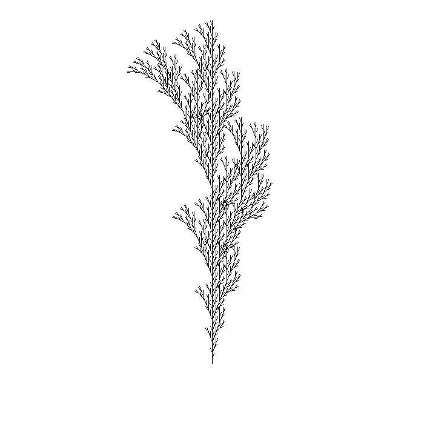
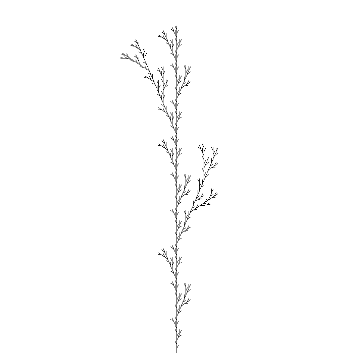

- A) Práca s grafikou, B) Collatzova postupnosť, C) Ulamova špirála, D)NSD prvá časť.
- A) Generovanie kombinácií, variácií a permutácií
- C) Koryrnačia grafika a fraktály (Kochova vločka, Sierpinskeho trojuholnik, Päťuholníková vločka)
- A) Základné tvary(len kruh a kružnica), C) Efekty (len šachovnica s krúžkami)
- A) Chaos game
| Link |
|---|


- Prvočísla
- Animácia vývoja pre moduly 2-399


Go back to TOC
Go back to TOC
Go back to TOC
Go back to TOC
Go back to TOC
- 3 body, 1/2
- 6 bodov, 1/2
- 6 bodov, 1/3
- 5 bodov, 1/2
- 5 bodov, 1/3


- Kochova vločka
- Sierpinského trojuholník
- Pytagorov stromček
- Riasa
- Riasa
- 
- Riasa
- Riasa
- 
Go back to TOC